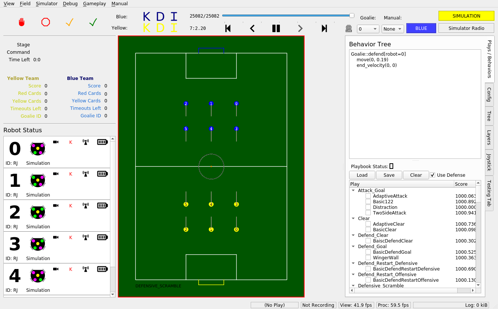

Getting Started
Running The First Time
After cloning the repo and changing directory (cd) to
robocup-software/, make sure you’ve run the setup script to install all
required dependencies. (See the “Installation” doc.)
Let’s run the stack on the GrSim simulation.
First, make sure you’re on the most updated version of ros2 branch. This is
where the latest working version of our codebase exists. (See “Github” doc.
–TODO: transfer this over here–)
git pull
git checkout ros2
Then, source the ROS setup file. This ensures your shell can use ROS commands.
source /opt/ros/foxy/setup.bash
If you’re on zsh, source the .zsh version instead. (If you don’t know what
zsh is, you’re not on zsh.)
source /opt/ros/foxy/setup.zsh
Then build the codebase. This compiles all of our code.
make perf
(This step will take upwards of 15 minutes on a VM.)
If the build fails, try the following command to clean all build files:
make clean
then try the build again.
After building, we need to source our local setup. Run the following in the
robocup-software directory:
source install/setup.bash
Again, if you’re on zsh, source the .zsh version instead:
source install/setup.zsh
Now we are good to go. As a sanity check, the following command should print
out rj_robocup:
ros2 pkg list | grep rj_robocup
To run sim, run the following:
ros2 launch rj_robocup sim.launch.py
If everything is working properly, you should see the following window show up.
(Note: when using actual (not simulated) vision data, swap make run-sim
for make run-soccer.)
Running Again
Now that you know how to source dependencies, build, and run our code, you can take advantage of some neat shortcuts. These shortcuts all depend on the following knowledge:
Sourcing only needs to happen every time a new terminal is opened, and building only needs to happen when C++ or launch.py files are changed.
(Python is not a compiled language; thus, those files do not need to be built when changed.)
So, after you’ve built once, the install/setup.bash script will exist in
your version of the repo, and you won’t have to build again until you make
changes to C++ or launch files. That means the next time you open up a new
terminal, you can launch sim with:
. ./source.bash
make run-sim
source.bash is an alias for the two source commands above, and make
run-sim is an alias for ros2 launch rj_robocup sim.launch.py.
Since Python is not compiled, if you’re working on gameplay exclusively, it’s likely that after the first build, you’ll only need to run:
make run-sim
However, if you’re working on C++ or launch files (or if someone else changes them on a different branch), you’ll need to build every time to see your changes. If you’ve already built once, though, you can build again more quickly with:
make again
. ./source.bash
The source.bash line is necessary to source the file in install/, which
is refreshed on each build. (Note: this does not build any CMake-related files,
so if you’re editing those, use make perf as usual.)
There are a few different ways to build our code. See the makefile for more details, but in sum:
make all # builds with full debugging symbols
make debug # alias for make all
make all-release # builds with 0 debugging symbols
make perf # builds with some debugging symbols; preferred method
Troubleshooting Build/Run Issues
The most common issue when running our code is forgetting to source after opening a new terminal. For that, try either
source /opt/ros/foxy/setup.bash # explicit
source install/setup.bash
. ./source.bash # shortcut
(Note: install/setup.bash will only exist after your first build.)
The next most common thing is forgetting to build after changing a C++ file or launch script. Resolve that by building to see your changes. Again, the default is
make perf
If make perf fails, your build system may be corrupted. Clean out your
build files with
make clean
then build again. (Note: you will have to manually re-source the install/ file after building: see above.)
If make clean fails, it may be something wrong with your branch or machine.
Checkout ros2 (the default branch) and try building there. If that succeeds,
the problem must be with your branch’s code.
If ros2 fails to build and run, there is an issue with your machine, since ros2’s build-ability is checked by GitHub Actions on every commit. Try running
./util/ubuntu-setup
so that your machine has all the required dependencies. Check to see if it outputs any errors when you do so and Google them if needed.
As a final sanity check, if you’ve tried all of the above, delete your copy of the robocup-software/ repo, and re-clone it from GitHub.